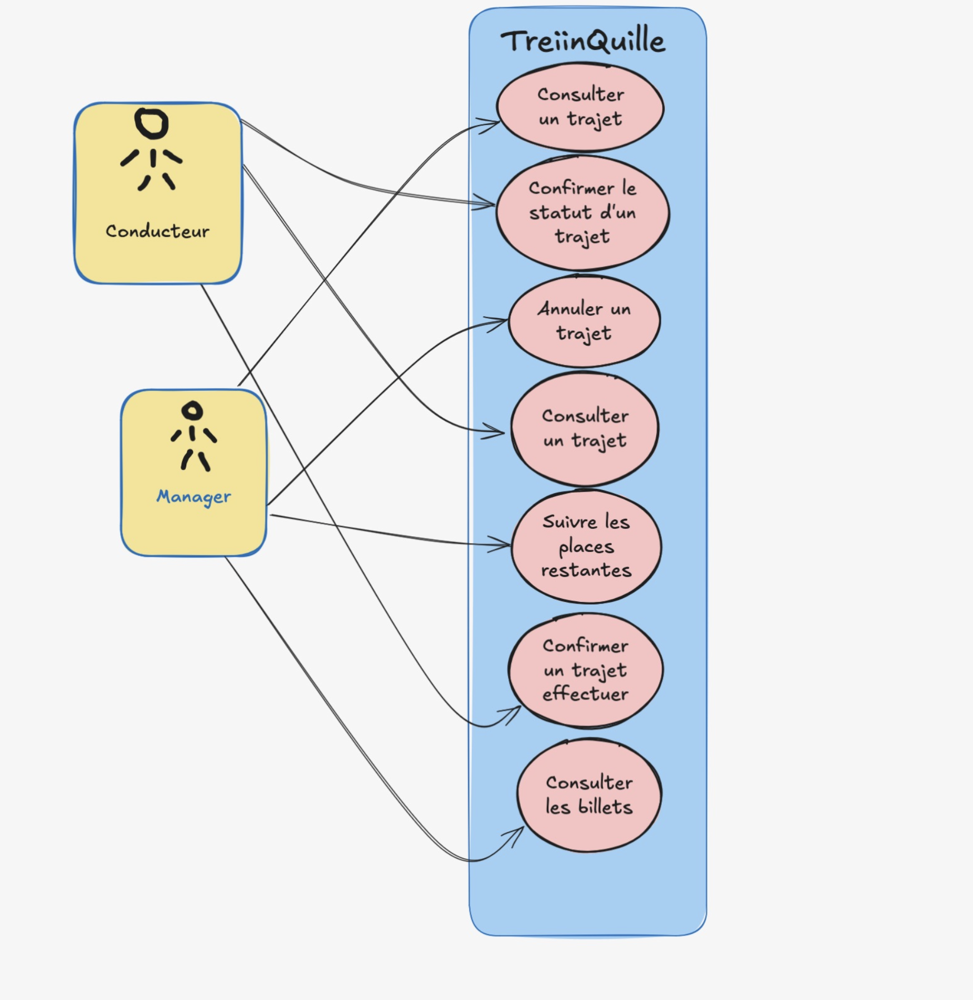
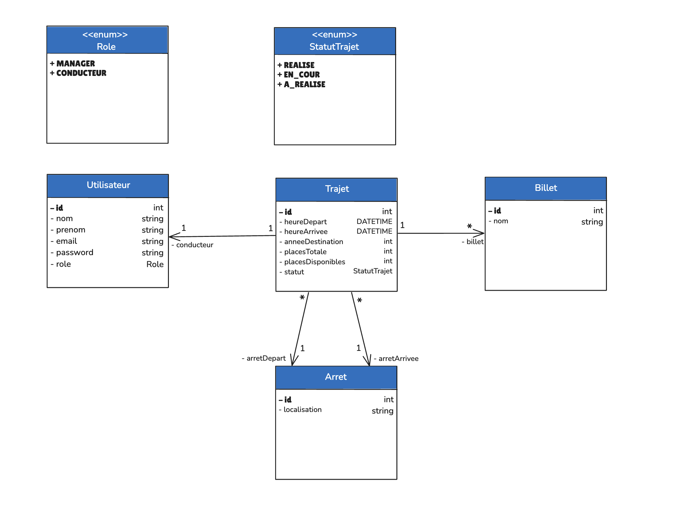
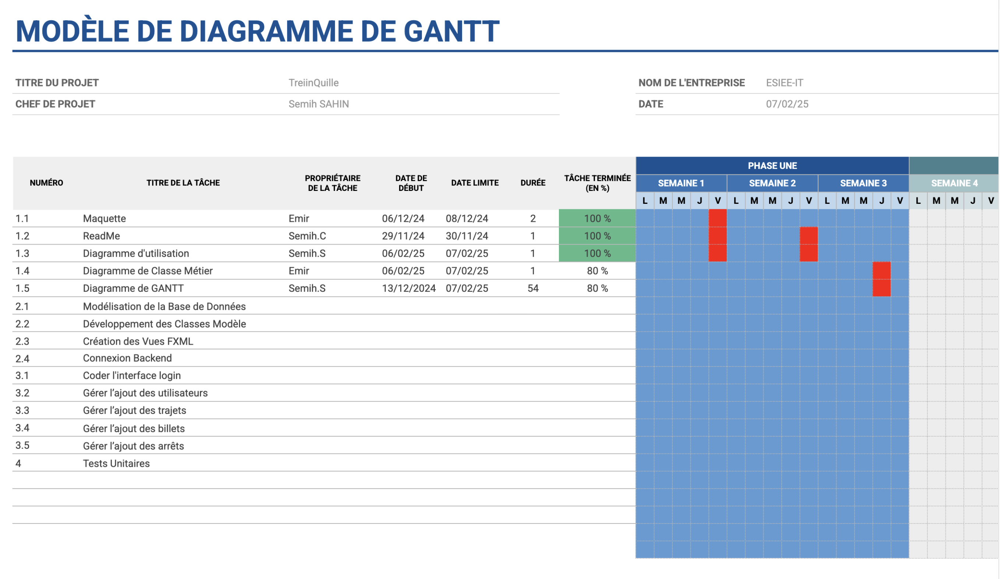

Détails du Projet
Découvrez les détails techniques et la méthodologie utilisée pour ce projet.
Présentation du Projet
Ce projet consistait à développer une application de gestion des équipements de protection individuelle (EPI) pour faciliter le suivi des attributions, des maintenances et des conformités aux normes de sécurité. L'objectif principal était de créer une solution efficace permettant aux entreprises de gérer leur inventaire d'équipements et d'assurer la sécurité de leurs employés.
Diagramme de cas d'utilisation
Diagramme de classes métier
Planning du Projet
Le projet a été réalisé selon un planning précis pour respecter les délais imposés. Voici le diagramme de Gantt qui présente les différentes phases du projet et leur durée.
Diagramme de Gantt
Maquette de l'Interface
Une maquette interactive a été créée pour visualiser l'interface utilisateur avant le développement. Ces designs ont servi de base pour l'implémentation de l'interface.
Cahier Technique
Un cahier technique complet a été rédigé pour détailler les aspects techniques du projet, incluant le contexte, les contraintes techniques et le modèle relationnel.
Technologies Utilisées
- Langages : C#, SQL
- Framework : WPF (Windows Presentation Foundation)
- Base de données : SQL Server
- ORM : Entity Framework
- Outils de développement : Visual Studio, SQL Server Management Studio
Fonctionnalités Principales
- Inventaire des équipements disponibles
- Suivi des attributions par employé
- Alertes pour les dates de vérification et maintenance
- Gestion de la conformité aux normes de sécurité
- Génération de rapports
Défis et Solutions
Au cours de ce projet, plusieurs défis ont dû être relevés :
- Gestion des nombreuses catégories d'EPI : Création d'une architecture flexible permettant d'ajouter facilement de nouvelles catégories
- Suivi des normes en constante évolution : Implémentation d'un système d'alerte pour les mises à jour des normes
- Interface utilisateur intuitive : Design UX/UI adapté aux besoins des utilisateurs finaux
Résultats et Perspectives
Ce projet a permis de mettre en place une solution complète de gestion des EPI, facilitant le travail des responsables sécurité et améliorant la conformité aux normes en vigueur. Les perspectives d'évolution incluent l'ajout d'une application mobile pour les inventaires sur le terrain et l'intégration de QR codes pour un suivi individualisé des équipements.